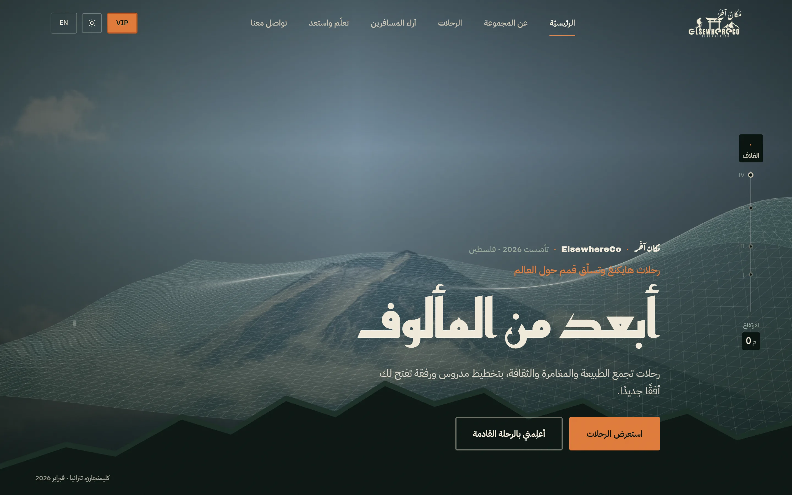

Fath means opening.
فتح · fath · opening
So that is the job. I open shops, studios and trip companies to their customers: an agent that answers, an app that books, a site in three languages. Scroll through the eye of the ف.
ElsewhereCo · LiveVisit it
Open one.
Six products are live. Each opens the way the page did.
افتح محادثة